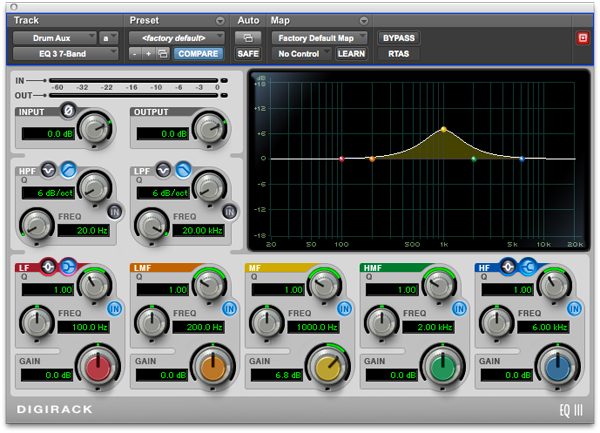
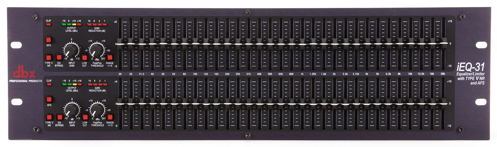
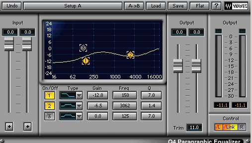

En el este ejemplo se tienen tres tipos de audio: tono puro, muestra de voz y muestra de música. En cada tipo de audio se tendrá la posibilidad de variar el nivel.

EQ III - Avid Technology. Ecualizador parámetrico encontrado en el digirack de Pro Tools
Ecualizador Paramétrico
En 1972, George Massenburg presentó el ecualizador paramétrico en una convención de la Audio Engineering Society (AES). Este permite realzar o atenuar diferentes bandas de frecuencia de manera que pueda variarse la frecuencia central, la constante de atenuación o realce y el factor Q. Algunos desarrolladores denominan el factor Q como “ancho de banda”, cabe aclarar que esta puede ser una especificación engañosa, pues el factor Q y el ancho de banda son inversamente proporcionales; para que la especificación sea correcta, el ancho de banda debe estar representado en octavas.

iEQ-31 - dBX. Ecualizador gráfico de 31 bandas, en versión de rack.
Ecualizador Gráfico
Suelen encontrarse como un conjunto de faders que controlan la ganancia de un filtro de campana con frecuencia central y factor Q fijos. El rango de frecuencias suele estar dividido en 1/3 de octava. Dependiendo de la aplicación, abarcarán o no todo el rango de frecuencias. Son utilizados generalmente en algunos procesos de calibración, control de feedback en sonido en vivo y ejercicios de entrenamiento auditivo.

Q4 Paragraphic Equalizer - Waves Audio. Ecualizador paragráfico de tres bandas, en versión plug-in.
Ecualizador Paragráfico
Un ecualizador paragráfico es un procesador que posee características de los ecualizadores gráficos y los paramétricos. Se caracteriza por que las frecuencias centrales de sus filtros son ajustables mediante un ligero barrido en lugar de estar fijas conforme a lo establecido por la ISO u otras preferencias de fábrica. Pueden tener o no un factor Q ajustable y conservan los controles de ganancia deslizantes que suministren la imagen de la curva de su respuesta ajustada.
Para aplicaciones de calibración o corrección, funcionan de manera similar a los gráficos; pero con la gran ventaja de poder variar la frecuencia central de sus filtros para hacerla coincidir con la frecuencia exacta que genera problemas o descompensaciones en el sistema o recinto.